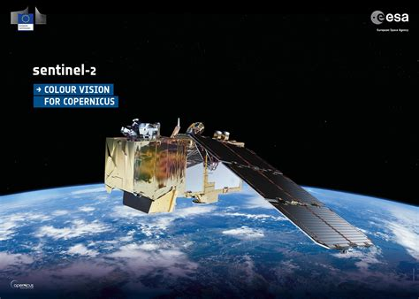
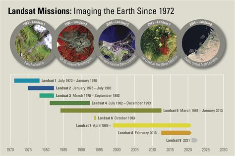

Remote sensing is the acquisition of dataset without being in contact.
There are different technologies which have been employed for that purspose where some of then include use of:
Different missions have been utilized to acquire satellite imageries
Sentinel Satellites capture imageries with a spatial resolution of 10m
 More about Sentinel MissionsLandsat imageries have a spatial resolution of 30m
 More about landsat missions